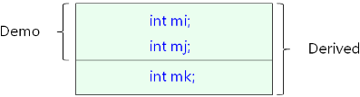
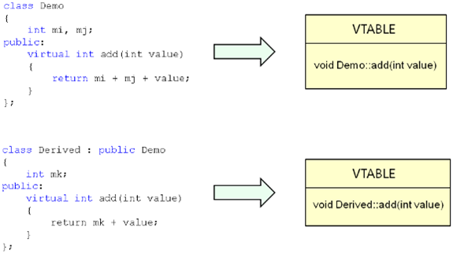
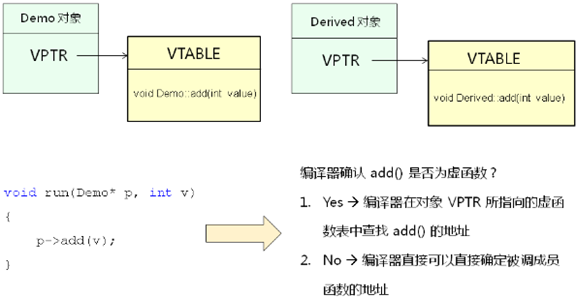
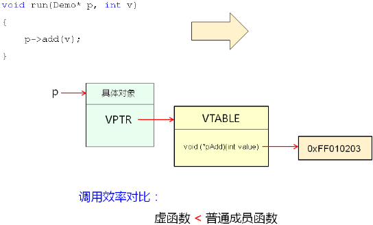

1，C++ 中继承是非常重要的一个特性，本节课研究在继承的情形下，C++ 的对象模 型又有什么不同；
2，继承对象模型（最简单的情况下）：
1，在 C++ 编译器的内部类可以理解为结构体；
2，子类是由父类成员叠加子类新成员得到的；
1，代码示例：
1 class Derived : public Demo
2 {
3 int mk;
4 };
2，对象排布：

1，在对象模型中，先排布父类对象模型，再排布子类对象模型，见 本文3中内容；
3，继承对象模型初探编程实验：
1 #include <iostream>
2 #include <string>
3
4 using namespace std;
5
6 class Demo
7 {
8 protected:
9 int mi;
10 int mj;
11 public:
12 virtual void print()
13 {
14 cout << "mi = " << mi << ", "
15 << "mj = " << mj << endl;
16 }
17 };
18
19 class Derived : public Demo
20 {
21 int mk;
22 public:
23 Derived(int i, int j, int k)
24 {
25 mi = i;
26 mj = j;
27 mk = k;
28 }
29
30 void print()
31 {
32 cout << "mi = " << mi << ", "
33 << "mj = " << mj << ", "
34 << "mk = " << mk << endl;
35 }
36 };
37
38 struct Test
39 {
40 void* p; // 为了证明 C++ 编译器真的会在对象中塞入一个指针成员变量，且指针放在最开始的字节处；
41 int mi;
42 int mj;
43 int mk;
44 };
45
46 int main()
47 {
48 cout << "sizeof(Demo) = " << sizeof(Demo) << endl; // 8 bytes
49 cout << "sizeof(Derived) = " << sizeof(Derived) << endl; // 12 bytes
50
51 Derived d(1, 2, 3);
52 Test* p = reinterpret_cast<Test*>(&d);
53
54 cout << "Before changing ..." << endl;
55
56 d.print(); // mi = 1, mj = 2, mk = 3；
57
58 /* 通过 p 对象改变成员变量的值，这里加了 p 指针后任然能够成功的访问； */
59 p->mi = 10;
60 p->mj = 20;
61 p->mk = 30;
62
63 cout << "After changing ..." << endl;
64
65 d.print(); // mi = 10, mj = 20, mk = 30；在外界访问不到的保护成员变量的值被改变了，改变是因为 d 对象的内存分布 Test 结构体的（此时类中未有虚函数，Test 中未有 空指针），因此可以用 p 指针改变 d 对象当中成员变量的值；
66
67 return 0;
68 }
4，多态对象模型：
1，C++ 多态的实现原理：
1，当类中声明虚函数时，编译器会在类中生成一个虚函数表；
2，虚函数表是一个存储成员函数地址的数据结构；
1，存储虚函数成员地址的数据结构；
3，虚函数表是由编译器自动生成与维护的；
4，virtual 成员函数会被编译器放入虚函数表中；
1，这个表是给对象使用的；
2，对象在创建时，在内部有一个虚函数表指针，这个指针指向虚函数表；
5，存在虚函数时，每个对象中都有一个指向虚函数表的指针；
2，框图展示：
1，框架一

1，编译父类时，编译器发现了 virtual 成员函数，因此编译器创建了一个虚函数表，并且将虚函数的地址放到了虚函数表里面；
2，编译子类时，继承自 Demo，编译器发现重写了 add 函数，因此必须是虚函数，于是编译器就为子类也生成一张虚函数表，并且也会在虚函数表中放入重写过后的 add 虚函数的地址；
2，框架二

1，当创建父类对象的时候，会为 Demo 对象自动的塞入一个指针 VPTR，也 就是如果类中有虚函数的话，在最终生成类对象的时候，会被编译器强 制赛一个指针成员变量，这个指针成员变量对于程序员是不可见的，但是它确确实实的会存在对象当中，这个指针成员变量指向了虚函数表；
2，当创建子类对象的时候，会为 Derived 对象自动的塞入一个指针 VPTR，其是一个虚函数表指针，最终会指向创建的虚函数表；
3，通过 p 指针来调用虚函数 add()，编译器就会判断，当前调用的 add() 函数是不是虚函数，如果是虚函数，编译器肯定可以知道这个虚函数地址位于虚函数表里面，编译器根据 p 指向的实际对象通过强行塞入的指针来查找虚函数表，然后在虚函数表里面取得具体的 add() 函数地址，然后通过这个地址来调用，这样子就实现了多态；
4，当通过指针调用的函数不是虚函数，这时就不会查找虚函数表了，此时就能够直接确定函数地址；
3，框架三

1，红色箭头代表寻址操作，即代表确定最后 add() 地址的操作；
2，通过 p 指针找到具体的对象，然后通过具体的对象找到这个虚函数表指针，之后通过虚函数表指针找到虚函数表，在虚函数表里面通过查找找到最后的函数地址；
3，多态发生的情形下，调用一个函数要经历三次寻址，这个调用效率不会高，即虚函数的调用效率低于普通的成员函数，C++ 中的多态是通过牺牲效率得到的；
4，所以在写 C++ 面向对象程序的时候，要考虑一个成员函数有没有必要成为虚函数，因为每当我们定义一个虚函数，就会牺牲一定的效率，而 C++ 因为继承了 C 语言的特性，所以天生就要高效，既要高效，又要实现多态，这就交给了程序员了；
5，虚函数中的指针指向具体对象，具体对象指针指向虚函数表，虚函数表中的指针指向具体的虚函数实现函数；
5，多态本质分析编程实验（用 C 实现多态）：
1，51-2.h 文件：
1 #ifndef _51_2_H_
2 #define _51_2_H_
3
4 typedef void Demo;
5 typedef void Derived; // C 语言实现继承用 C++ 中的方法，即叠加；
6
7 /* 父类中继承的成员函数 */
8 Demo* Demo_Create(int i, int j);
9 int Demo_GetI(Demo* pThis);
10 int Demo_GetJ(Demo* pThis);
11 int Demo_Add(Demo* pThis, int value); // 虚函数
12 void Demo_Free(Demo* pThis);
13
14 /* 子类中新定义的成员函数 */
15 Derived* Derived_Create(int i, int j, int k); // 构造函数；
16 int Derived_GetK(Derived* pThis);
17 int Derived_Add(Derived* pThis, int value); // 虚函数
18
19 #endif 2，51-2.c 文件：
1 #include "51-2.h"
2 #include "malloc.h"
3
4 static int Demo_Virtual_Add(Demo* pThis, int value); // 父类，先在这里声明，实现见第六步；
5 static int Derived_Virtual_Add(Demo* pThis, int value); // 子类 3，声明子类虚函数，实现见下面
6
7 struct VTable // 2. 定义虚函数表数据结构（用结构体表示虚函数表的数据结构，其用来创建虚函数表，见 static struct VTable g_Demo_vtbl）
8 {
9 int (*pAdd)(void*, int); // 3. 虚函数表里面存储什么？
10 };
11
12 /* 父类成员函数 */
13 struct ClassDemo
14 {
15 struct VTable* vptr; // 1. 定义虚函数表指针 ==》 虚函数表指针类型是什么，见第二步定义；
16 int mi;
17 int mj;
18 };
19
20 /* 子类成员函数 */
21 struct ClassDerived
22 {
23 struct ClassDemo d; // 父类的成员变量叠加上子类的成员变量，最开始的部分为父类；
24 int mk;
25 };
26
27 /* 父类，创建一个全局的虚函数表变量，通过 static 关键字将虚函数表隐藏在当前的文件中，外界不可访问 */
28 static struct VTable g_Demo_vtbl =
29 {
30 Demo_Virtual_Add // 7，用真正意义上的虚函数来初始化虚函数表指针；
31 };
32
33 /* 子类 2 放子类真正意义上的虚函数 */
34 static struct VTable g_Derived_vtbl = // static 关键字是对虚函数表这个变量隐藏在当前文件当中，完结不可访问。
35 {
36 Derived_Virtual_Add
37 };
38
39 /* 父类构造函数 */
40 Demo* Demo_Create(int i, int j)
41 {
42 struct ClassDemo* ret = (struct ClassDemo*)malloc(sizeof(struct ClassDemo));
43
44 if( ret != NULL )
45 {
46 ret->vptr = &g_Demo_vtbl; // 4. 关联对象和虚函数表
47 ret->mi = i;
48 ret->mj = j;
49 }
50
51 return ret;
52 }
53
54 /* 父类成员函数 */
55 int Demo_GetI(Demo* pThis)
56 {
57 struct ClassDemo* obj = (struct ClassDemo*)pThis;
58
59 return obj->mi;
60 }
61
62 /* 父类成员函数 */
63 int Demo_GetJ(Demo* pThis)
64 {
65 struct ClassDemo* obj = (struct ClassDemo*)pThis;
66
67 return obj->mj;
68 }
69
70 // 6. 定义虚函数表中指针所指向的具体函数
71 static int Demo_Virtual_Add(Demo* pThis, int value)
72 {
73 struct ClassDemo* obj = (struct ClassDemo*)pThis;
74
75 return obj->mi + obj->mj + value;
76 }
77
78 /* 这个函数功能和上个函数功能并没有重复，这个函数变成对外的用户所使用的函数接口 */
79 // 5. 分析具体的虚函数是什么？要定义一个全局意义上的真正的虚函数，并且这个虚函数只在当前文件中可以访问；
80 int Demo_Add(Demo* pThis, int value)
81 {
82 struct ClassDemo* obj = (struct ClassDemo*)pThis;
83
84 /* 通过对象找到具体的虚函数表指针，然后再找到具体的 add() 函数，具体的 add() 函数地址保存在 pAdd 里面，在这里应该是 Demo_Virtual_Add()函数 */
85 return obj->vptr->pAdd(pThis, value);
86 }
87
88 /* 父类析构函数 */
89 void Demo_Free(Demo* pThis)
90 {
91 free(pThis);
92 }
93
94 /* 子类构造函数 */
95 Derived* Derived_Create(int i, int j, int k)
96 {
97 struct ClassDerived* ret = (struct ClassDerived*)malloc(sizeof(struct ClassDerived));
98
99 if( ret != NULL )
100 {
101 ret->d.vptr = &g_Derived_vtbl; // 子类 1 ，首先关联虚函数表指针，指向子类虚函数表；
102 ret->d.mi = i; // 初始化父类成员变量，d 是子类中父类的结构体变量；
103 ret->d.mj = j;
104 ret->mk = k;
105 }
106
107 return ret;
108 }
109
110 /* 子类成员函数 */
111 int Derived_GetK(Derived* pThis)
112 {
113 struct ClassDerived* obj = (struct ClassDerived*)pThis;
114
115 return obj->mk;
116 }
117
118 /* 子类成员函数 */
119 static int Derived_Virtual_Add(Demo* pThis, int value)
120 {
121 struct ClassDerived* obj = (struct ClassDerived*)pThis;
122
123 return obj->mk + value;
124 }
125
126 /* 子类成员函数 */
127 int Derived_Add(Derived* pThis, int value)
128 {
129 struct ClassDerived* obj = (struct ClassDerived*)pThis;
130
131 return obj->d.vptr->pAdd(pThis, value);
132 }3，应用文件：
1 #include "stdio.h"
2 #include "51-2.h"
3
4 void run(Demo* p, int v)
5 {
6 int r = Demo_Add(p, v); // DEmo_Add(p, 3); 没有实现多态的时候，C++ 编译器这样做更安全；
7
8 printf("r = %d\n", r);
9 }
10
11 int main()
12 {
13 Demo* pb = Demo_Create(1, 2);
14 Derived* pd = Derived_Create(1, 22, 333);
15
16 printf("pb->add(3) = %d\n", Demo_Add(pb, 3)); // 6
17 printf("pd->add(3) = %d\n", Derived_Add(pd, 3)); // 336
18
19 run(pb, 3); // 没有实现多态的时候，打印 6；实现多态后，打印 6；
20 run(pd, 3); // 没有实现多态的时候，打印 26；实现多态后，打印 336；
21
22 Demo_Free(pb);
23 Demo_Free(pd); // 子类可以继承父类的析构函数，所以可以通过父类的析构函数来析构子类对象；
24
25 return 0;
26 }4，步骤：
1，先实现基本的子类继承和其成员函数基本功能；
2，后实现多态；
5，C 实现 C++ 中的多态（第三个视频这里不是很明白）：
1，子类继承：
1，另外生成结构体，内容由子类叠加父类的结构体内容；
2，子类构造函数：
1，另外写，先在堆上面生成指向结构体的指针，子类调用父类的构造函数是不影响父类原来的构造函数的；
3，多态实现：
1，在对象的结构体中定义虚函数表指针（要考虑虚函数表指针类型）；
2，在虚函数结构体中定义虚函数表数据结构（就是定义一个空的结构体）；
3，在虚函数结构表中存放指向虚函数成员函数的指针；
4，在构造函数中关联具体的对象和虚函数表；
5，分析让那个函数称为真正的虚函数（ static 修饰 ）；
6，定义虚函数表指针所指向的具体函数。
6，小结：
1，继承的本质就是父子间成员变量的叠加；
2，C++ 中的多态是通过虚函数表实现的；
3，虚函数表是由编译器自动生成与维护的；
4，虚函数的调用效率低于普通成员函数；